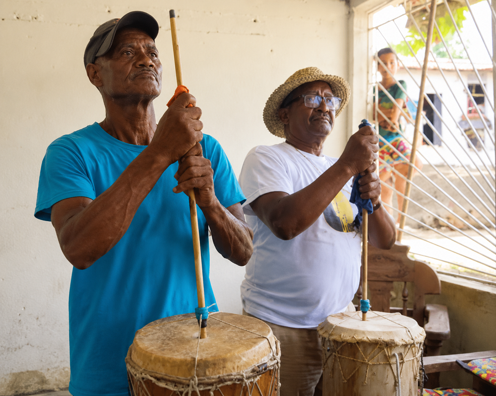

El furro o furruco
Apunte 020
Inicio > Blog Bitácora de un músico > Apunte 020
El bajo de fricción de la gaita zuliana
La gaita zuliana es una tradición musical venezolana asociada sobre todo con el estado Zulia, especialmente con Maracaibo y la región del lago de Maracaibo. Aunque ahora se interpreta durante todo el año, sigue estando muy ligada a la Navidad y a las festividades en torno a la Virgen de Chiquinquirá.
Una de sus formas principales es la gaita de furro, también llamada gaita marabina. Su conjunto reúne voces, cuatro, tambora, charrasca, maracas y furro.
El furro, también llamado furruco, es el bajo de fricción de este conjunto. Su estructura es sencilla: un cuerpo de madera cilíndrico o ligeramente cónico, una membrana de cuero tensada sobre una abertura y una varilla o caña central que se activa con la mano humedecida del intérprete.
El sonido no se produce al golpear la membrana, sino casi que al tirar de ella.
Cómo suena
Organológicamente, el furro es un membranófono de fricción. La mano agarra y suelta la varilla en rápida alternancia, transmitiendo vibraciones a la membrana. El resultado es un sonido grave, áspero, inestable y continuo.
Esta clasificación identifica el mecanismo, pero no el efecto musical. Un tambor golpeado produce impacto: ataque, resonancia y caida. El furro produce presión. Su sonido no tiene una altura tonal precisa, ni una armonía definida, como tiene un bajo. Crece bajo las voces y la percusión como una presencia grave y áspera.
Por esta razón, llamarlo "bajo" solo es útil si se entiende bajo como peso, no como línea.
Dentro de la gaita de furro
En la gaita de furro, cada instrumento ocupa una capa distinta. El cuatro proporciona soporte armónico y rítmico. La tambora, la charrasca y las maracas definen la superficie rítmica. Las voces interpretan la estrofa y el estribillo.
El furro ocupa la capa inferior. No compite con las voces ni duplica la percusión. Engrosa el conjunto desde abajo.
Sin él, la textura cambia. El ritmo puede continuar, la armonía puede continuar, las voces pueden continuar, pero el terreno ha cambiado.
Sonido estacional
El furro también está ligado al tiempo. Las tradiciones vinculan la gaita de furro a un ciclo que comienza en torno a las festividades de la Virgen de Chiquinquirá, en noviembre, y se extiende hasta la Candelaria, en febrero.
Dentro de ese ciclo, el instrumento no solo se escucha por su timbre, sino que se convierte en un marcador de retorno. Su sonido reaparece en reuniones, en las calles, en celebraciones domésticas, en cantos públicos, en la radio y en grabaciones.
El instrumento transporta tanto la teomporalidad como la sonoridad.
Linaje europeo
El furro está históricamente relacionado con la zambomba ibérica. La conexión no es solo estructural, sino que se reconoce explícitamente en las descripciones venezolanas del instrumento. Ambos pertenecen a la familia de los tambores de fricción y ambos dependen de la vibración producida por frotamiento en lugar de por percusión.
Pero esta relación no debe confundirse con una simple preservación.
En Zulia, el principio heredado se integra en otra lógica de conjunto. Se vuelve más grande, más grave y más central en la textura musical. La conexión con la zambomba explica el origen del mecanismo. Pero no explica en qué se termina convirtiendo el furro.
Lo que permanece
El furro le da a la gaita de furro una presencia que ningún otro instrumento del conjunto logra dar.
No es melodía, ni texto, ni ritmo superficial. Es la vibración subyacente de la canción: áspera, inestable, corporal y estacional.
El instrumento recuerda a la zambomba en su mecanismo. Pero pertenece a Zulia en su función.
Una mano tira. La membrana responde. Y la canción cobra peso.
Lecturas
- Aretz, Isabel (1967). Instrumentos musicales de Venezuela. Cumaná: Universidad de Oriente.
- González R., Edepson E. (2013). Estudio sistematizado de los recursos armónicos aplicados por Humberto Bracho en el acompañamiento de la gaita de furro. Trabajo Especial de Grado, Universidad Nacional Experimental de las Artes.
- Matos Romero, Manuel (1968). La gaita zuliana.
- Ochoa, Édixon, and Elvin Yamarthee (2023). La Grey zuliana: revisión sociohistórico-musical de una icónica gaita de furro o maracaibera. Maracaibo: Fundación Ediciones Clío / Academia de Historia del Estado Zulia / Centro de Estudios Históricos de la Universidad del Zulia / Centro de Escritores Zulianos.
- Ramón y Rivera, Luis Felipe (1967). Música indígena, folklórica y popular de Venezuela. Buenos Aires: Ricordi Americana.
- Rodríguez Balestrini, Humberto (2007). Hablemos de gaitas y gaiteros. Maracaibo: Universidad del Zulia, Vicerrectorado Académico, SERBILUZ-CIDHIZ.
Video. Del usuario de YouTube Meyver Rivera.